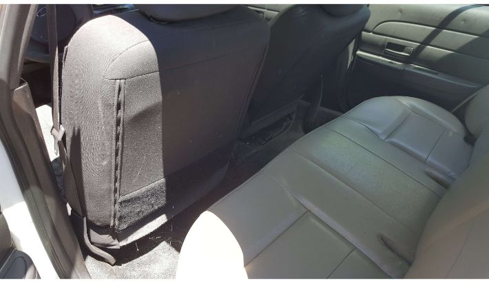
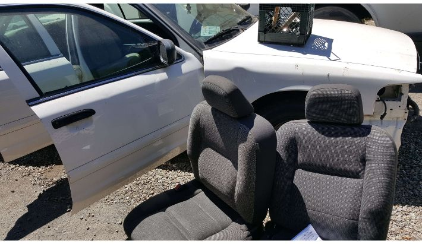
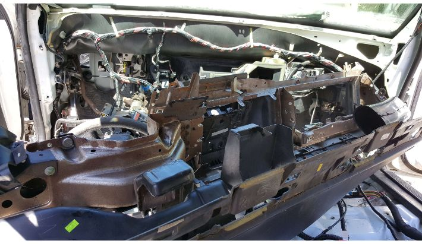
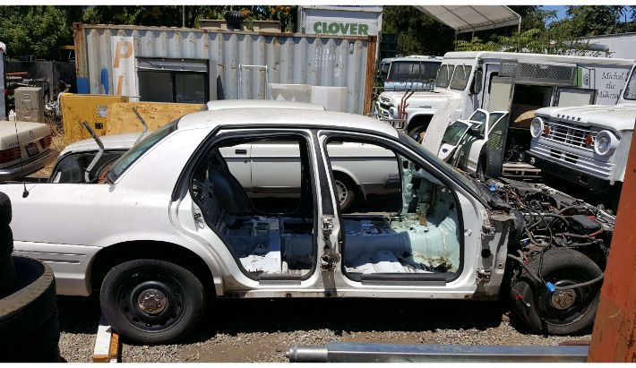
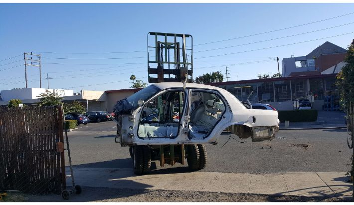

Background
Looking towards the future, I am going to need a car. I do not want my car to just be a way of getting myself from Point A to Point B, I want it to function as a tool. I want hauling capacity for projects and raw materials. I also want to learn from the build process, have air conditioning, decent fuel economy, and stay under 5,000 dollars if possible. After much thought and research, I came to the conclusion that the best way to meet all of those criteria would be to swap an old Ford F-100 truck body onto the drivetrain of a 2005 Ford Crown Victoria Police Interceptor (once belonging to the Portland Police Department), to achieve the performance of the police car with the aesthetic and hauling ability of a 1960's pick up truck. Believe it or not, it is actually a fairly common swap that people do, because the wheelbase of the truck is almost exactly the same as the wheelbase of the police interceptor. This project is still in progress as of October 2018.
Crown Victoria Preparation
The first step was stripping the Crown Victoria down to its bare shell, removing everything to make the body removal as easy as possible. Luckily for me, the front bumper was already missing, so I got to save some time.
 The car, missing its front bumper.
The car, missing its front bumper.
 Side view of the relatively untouched car.
Side view of the relatively untouched car.
 Untouched interior.
I began by removing all of the seats, before moving on to the upholstery removal. Then I removed the front fenders and hood.
 Seats out.Removing upholstery.
 Hood and fenders gone.
Hood and fenders gone.
It became apparent pretty immediately that the entire wiring harness would have to be removed and reinstalled later in order to permit the body to be lifted off, and all interior trim as well as the dashboard had to be removed to access the harness. I labelled all of the connections with blue tape.
 Dashboard on its way out, it was much heavier than I expected.
 Dash gone, revealing a mess of wiring.
Dash gone, revealing a mess of wiring.
With all trim out, I could then unplug the harness from its seemingly endless number of connections, and separate it from the car.
Harness revealed after removing trim.
 The entire harness, fit into a cardboard box for safe keeping. What a headache!
The entire harness, fit into a cardboard box for safe keeping. What a headache!
The harness was the last big thing obstructing the body from lifting off, so with it gone I could (finally) undo the ten or so bolts holding the body to the chassis as well as the gas filler neck cap and doors. I also removed the steering wheel, power brake booster, gas pedal, and heater/AC assembly from the firewall. From there, it just took a forklift a little coaxing to reveal... that the gas tank was still attached to the body! I had to dash in and undo the straps and drill out the pop rivets holding the assembly in place, at which point the body finally separated from the chassis.
 The car, completely stripped down. The body is off!
At last, the part of the car that I actually need for this build: the powertrain and chassis.
Build in progress... Check back every once in a while for updates on this project!